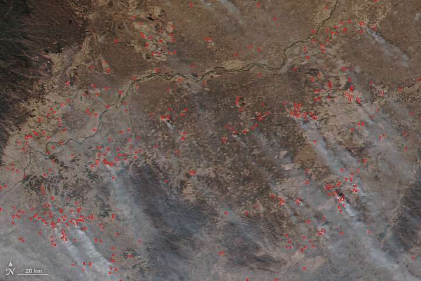

PyroScale
Explore a global fire record built from NASA’s MODIS and VIIRS satellite data. Draw an area or select a hotspot on the globe to compare past fire seasons, see monthly forecasts, and test what-if scenarios.
Our mission
Make decades of fire data comparable and useful.
PyroScale helps people analyze regional hotspot activity, compare seasons, and explore forecasts and what-if scenarios.
MODIS and VIIRS detect hotspots at different resolutions, so their raw counts don’t line up. We compare their overlap to estimate earlier VIIRS-equivalent counts where the data support it.


How PyroScale works
We use NASA satellite data to compare historical hotspot activity around the world.
Align the satellite records
VIIRS can detect smaller hotspots than MODIS. We group NASA FIRMS detections by month in 3° cells and use the sensors’ overlap to estimate VIIRS-equivalent counts for 2001–2011 where the model was fitted.
Train and test the forecast
A seasonal median estimates NOAA-20 hotspot counts 1–24 months ahead. It beat LightGBM on held-out data, and cell-level uncertainty ranges appear where calibration data support them.
Explore what-if scenarios
Draw a region or find a place on the globe. Change warming, rainfall, ignitions, or fuel management and compare the result with an illustrative baseline based on observations, forecasts and seasonal trends.
Start with a place you know.
Try your hometown, a place you’ve visited, or a region you’re learning about. You can start with a quick search and follow whichever pattern catches your eye.
Find a familiar place
Search for a city or country, or draw a box around the area you’re curious about.
Search placesSpot a pattern
Open the calendar and look for months that keep lighting up. Do you see the same pattern every year?
Open the calendarSee what might come next
Pick a forecast month, look at the uncertainty range, then try changing one assumption in the Scenario lab.
See the forecastFor current fire alerts and evacuation guidance, follow your local authorities.
Our team
Phoenix Protocol
We’re building PyroScale to help communities understand how fire activity changes where they live.
Haroon Abbas Chaudhry
Zayan Muneer
Abdul Subhan
Ibrar Ahmed Sardar
Zaid Ali Sheikh
Shahmeer Abdullah Malik